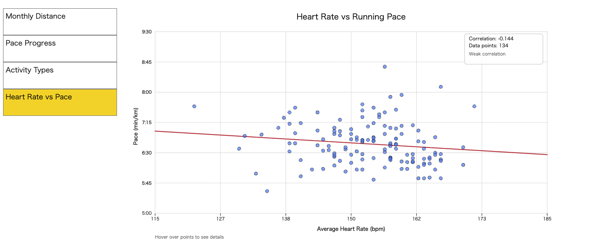
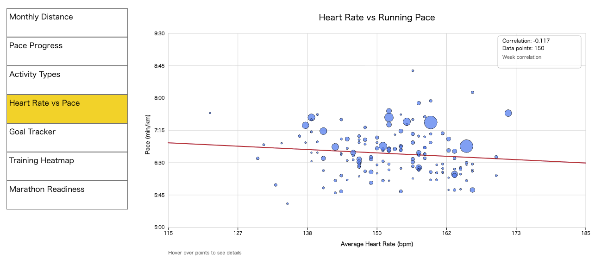
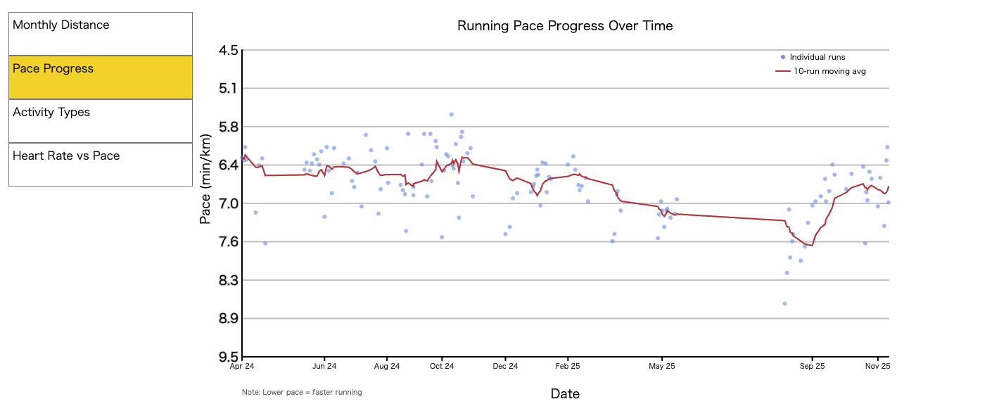
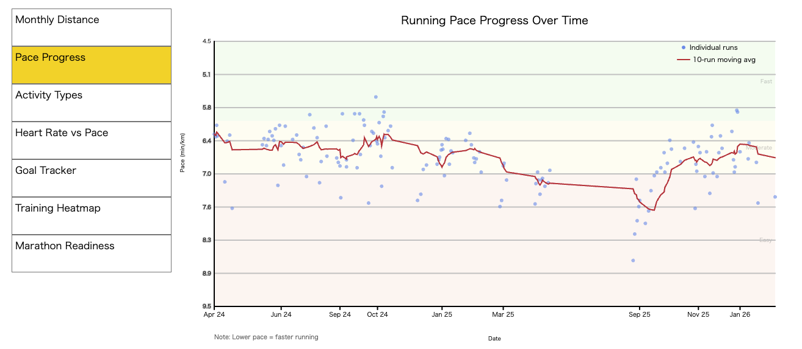

Since the midterm, I have completed three additional visualisations and refined the existing code through iterative design, testing, and debugging.
The Heart Rate vs Pace scatter plot required implementing Pearson's correlation coefficient and least-squares linear regression from mathematical formulae. The initial version displayed only data points, making trends invisible. I added a regression line and correlation value (r = −0.67), revealing that lower heart rates correlate with faster paces. A key challenge was parsing pace data from "6:30" string format into decimal minutes (6.5), which I debugged using Chrome DevTools breakpoints to trace the data flow through paceToMinutes(). After the midterm, I further refined the scatter plot by mapping point size to running distance, creating a bubble chart that communicates three data dimensions simultaneously.
For Pace Progress, raw pace values produced a noisy graph. I implemented a trailing moving average (window = 10 runs) to smooth fluctuations while preserving the downward trend. I also added colour-coded pace zone backgrounds (Fast, Moderate, Easy) to provide immediate visual context for each data point.
The Goal Tracker uses a semicircular gauge rather than a bar chart, because a gauge better communicates percentage progress toward a target. The implementation required trigonometric calculations (cos/sin) for polar coordinate positioning along a 270-degree arc.
Reviewer feedback identified three issues I addressed: I extracted tooltip rendering into a reusable Tooltip class (separation of concerns), fixed implicit global variables from missing let declarations, and consolidated duplicate paceToMinutes() into helper-functions.js (DRY principle). All visualisations use asynchronous callbacks in loadTable() with a loaded flag, ensuring the UI remains responsive during CSV loading.
I wrote unit tests (tests.js) for key functions — validating paceToMinutes(), formatPace(), Pearson's correlation, linear regression, moving average, and colour mapping — using black-box testing with known inputs and expected outputs. I also created system test cases to verify each visualisation's rendering, interaction, and data integrity across all seven extensions.
I developed two novel chart types: a Training Heatmap adapting GitHub's contribution graph to display daily distances on a calendar grid (nested loops, colour mapping), and a Marathon Readiness Radar plotting five normalised metrics on a spider chart (trigonometry at 72-degree intervals). Both were built from scratch without external libraries.
These additions transform the project from individual metric displays into an integrated analytical dashboard for marathon preparation.



